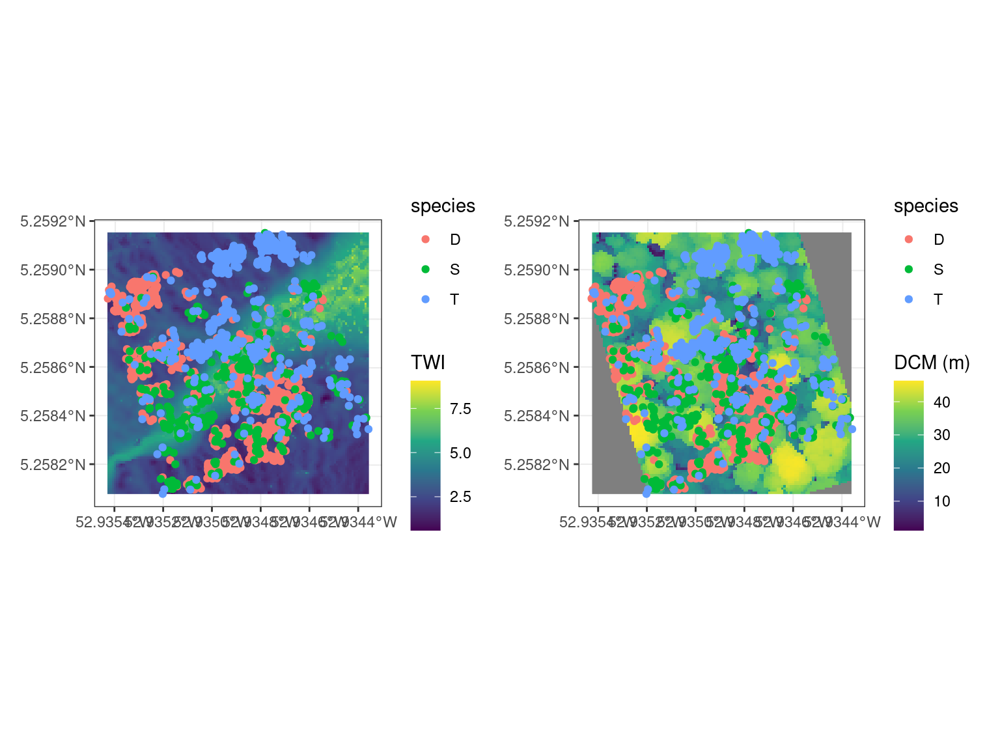
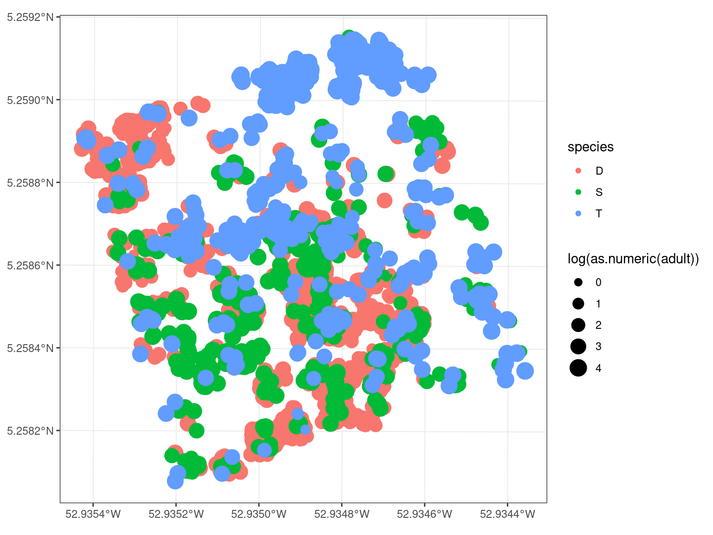
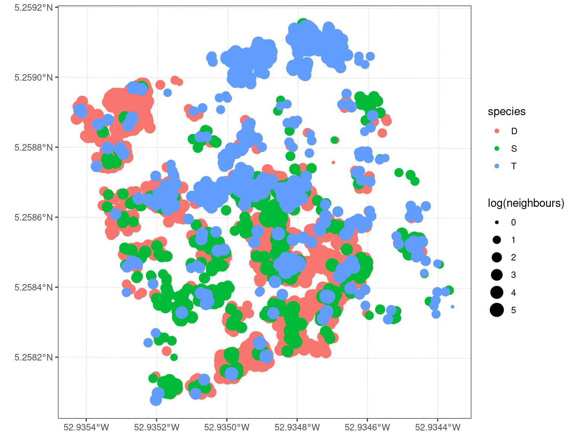
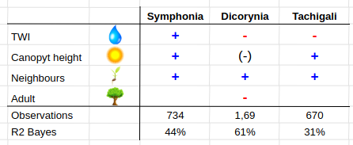

Chapter 4 Individual analyses
Idea: work with individual presence against random pseudo-absences with distribution modelling.
Y ~ bernoulli_logit(theta + theta_TWI + theta_canopyheight + theta_neighbour + spatial_random_effect)
Possibility to test hieght and number of leaves as a continuous response too.
4.2 Environment (water, light, ~nutrients)

| symphonia | dicorynia | tachigali | ||||
|---|---|---|---|---|---|---|
| Predictors | Estimates | CI (95%) | Estimates | CI (95%) | Estimates | CI (95%) |
| Intercept | 0.45 | 0.25 – 0.66 | 1.42 | 1.23 – 1.61 | 0.23 | -0.10 – 0.56 |
| twi | 0.29 | 0.23 – 0.35 | -0.20 | -0.25 – -0.15 | -0.05 | -0.13 – 0.03 |
| dcm | -0.08 | -0.13 – -0.02 | -0.20 | -0.26 – -0.15 | 0.10 | 0.01 – 0.19 |
| Observations | 1365 | 3123 | 1250 | |||
| R2 Bayes | 0.086 | 0.032 | 0.007 | |||
4.3 Adult neighbourhood (dispersion)

| symphonia | dicorynia | tachigali | ||||
|---|---|---|---|---|---|---|
| Predictors | Estimates | CI (95%) | Estimates | CI (95%) | Estimates | CI (95%) |
| Intercept | 0.41 | 0.26 – 0.56 | 1.18 | 1.13 – 1.24 | 0.68 | 0.50 – 0.87 |
| adult | 0.03 | -0.02 – 0.08 | -0.26 | -0.28 – -0.24 | -0.06 | -0.11 – 0.00 |
| Observations | 1468 | 3380 | 1340 | |||
| R2 Bayes | 0.001 | 0.148 | 0.003 | |||
4.4 Seedlings neighbourhood (competition)

| symphonia | dicorynia | tachigali | ||||
|---|---|---|---|---|---|---|
| Predictors | Estimates | CI (95%) | Estimates | CI (95%) | Estimates | CI (95%) |
| Intercept | -0.79 | -0.87 – -0.71 | -1.03 | -1.07 – -0.98 | -0.63 | -0.72 – -0.54 |
| neighbours | 0.39 | 0.36 – 0.41 | 0.44 | 0.42 – 0.45 | 0.35 | 0.32 – 0.38 |
| Observations | 1468 | 3380 | 1340 | |||
| R2 Bayes | 0.412 | 0.608 | 0.311 | |||
4.5 All together
| symphonia | dicorynia | tachigali | ||||
|---|---|---|---|---|---|---|
| Predictors | Estimates | CI (95%) | Estimates | CI (95%) | Estimates | CI (95%) |
| Intercept | -1.47 | -1.68 – -1.25 | -0.74 | -0.89 – -0.58 | -0.96 | -1.29 – -0.64 |
| twi | 0.16 | 0.11 – 0.21 | 0.12 | 0.09 – 0.16 | 0.02 | -0.05 – 0.09 |
| dcm | 0.14 | 0.10 – 0.18 | 0.00 | -0.03 – 0.03 | 0.13 | 0.05 – 0.20 |
| neighbours | 0.38 | 0.36 – 0.41 | 0.40 | 0.39 – 0.42 | 0.34 | 0.31 – 0.37 |
| adult | 0.02 | -0.02 – 0.06 | -0.11 | -0.13 – -0.09 | -0.02 | -0.07 – 0.03 |
| Observations | 1365 | 3123 | 1228 | |||
| R2 Bayes | 0.437 | 0.608 | 0.314 | |||
